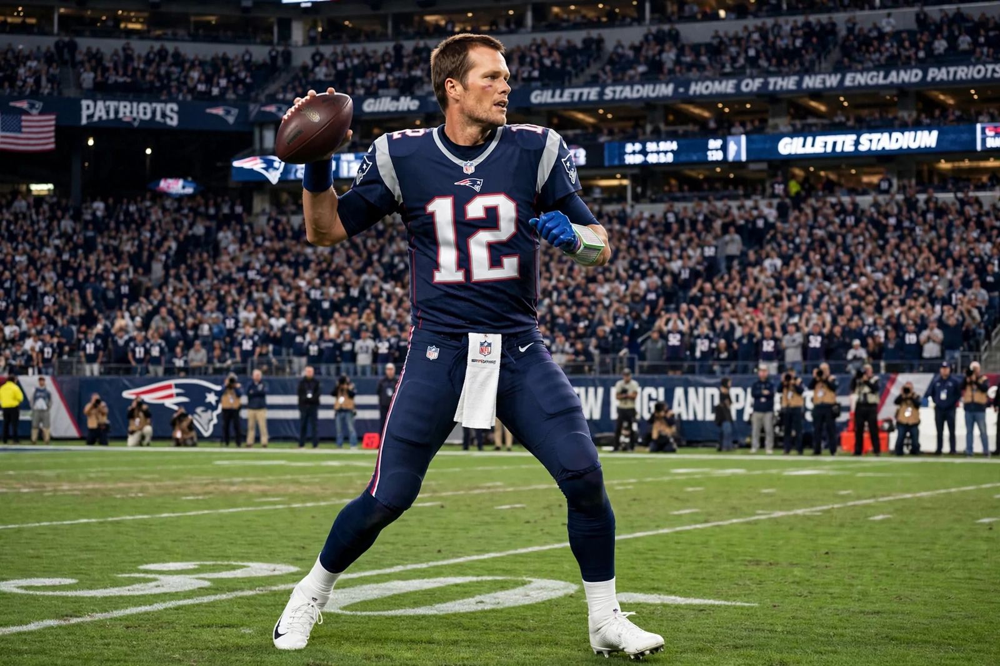

Tom Brady

| Born | 3 August 1977, San Mateo, California |
|---|---|
| Position | Quarterback |
| Teams | New England Patriots (2000–2019), Tampa Bay Buccaneers (2020–2022) |
| Super Bowl wins | 7 (XXXVI, XXXVIII, XXXIX, XLIX, LI, LIII, LV) |
| Career passing yards | 89,214 (NFL record) |
| Career passing TDs | 649 (NFL record) |
Thomas Edward Patrick Brady Jr. (born 3 August 1977) is an American former professional football quarterback who played 23 seasons in the National Football League (NFL). Widely regarded as the greatest quarterback of all time, he won a record seven Super Bowl championships — more than any single NFL franchise — and holds numerous quarterback records, including career passing yards and touchdowns.
Career
Brady was famously overlooked in the 2000 NFL draft, selected by the New England Patriots with the 199th pick in the sixth round. He became the starter in 2001 after an injury to Drew Bledsoe and led the Patriots to an upset victory in Super Bowl XXXVI. Under Brady and head coach Bill Belichick, New England built a two-decade dynasty: nine Super Bowl appearances and six titles, including Super Bowl LI, where the Patriots overcame a 28–3 deficit against Atlanta — the largest comeback in Super Bowl history. His career was also marked by the "Deflategate" controversy, which led to a four-game suspension in 2016.
In 2020 Brady left New England for the Tampa Bay Buccaneers and won Super Bowl LV in his first season there, at age 43. He retired in February 2023 — after a brief 40-day unretirement in 2022 — finishing with 89,214 passing yards and 649 touchdown passes. He subsequently began a broadcasting career with Fox Sports and became a minority owner of the Las Vegas Raiders.
Legacy
Brady was named league MVP three times and Super Bowl MVP five times. His longevity, sustained excellence into his mid-forties, and record of postseason success — 35 playoff wins — set him apart in debates over the greatest players in NFL history.